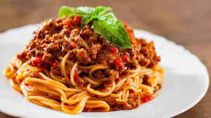

Spagetti ar boloņas mērci

Itāļu virtuves šedevrs Jūsu mājās!
Sastāvdaļas
- 2 ēdamk. Olīveļļa
- 1 Sīpols
- 2 Daivas Ķiploks
- 1 Burkāns
- 400g Malta liellopu gaļa
- 3 ēdamk. Tomātu pasta
- 390g Konservēti sasmalcināti tomāti
- 1. tējk. Oregano
- 0.5 tējk. Timiāns
- 0.5 tējk. Sāls
- 0.5 tējk. Pipari
- 500g Spagetti makaroni
- Parmas siers
- Loki
Pagatavošana
- Pannā uzkarsē eļļu un apcep smalki sagrieztu sīpolu līdz tas kļūst zeltaini brūns, pievieno caur ķiplokspiedi izspiestu ķiploku, smalki sagrieztu vai sarīvētu burkānu.
- Visu apcep.
- Pievieno malto gaļu un cep līdz tā ir apcepta.
- Tad pievieno tomātu pastu, sasmalcinātus tomātus savā sulā un visas garšvielas.
- Uzvāri, samazini uguni un uz lēnas uguns pasautē 5-10 minūtes, kamēr mērce sabiezē.
- Makaronus izvāri pēc instrukcijas.
- Pasniedz, makaronus pārlejot ar mērci un visu pārkaisot ar rīvētu parmas sieru un sakapātiem lociņiem.
Izmantotā recepte